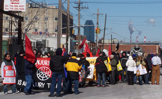

Submitted on Thu, 02/22/2007 - 11:37pm

Bushwick- In continued actions resulting from the illegal firing of IWW union organizers in five food distribution companies, hundreds of Wobblies, activists, and community supporters gathered on Feb 19, 2007, to demonstrate against the repressive tactics characteristic of bosses in the food industry. Prior to organizing, most workers received about $280 weekly for 60 hours of work without benefits, sick, or vacation days. Some workers have been organizing with the IWW since 2005. In response to the protest, at least three of the food warehouses closed for Presidents’ Day. IWW organizer Billy Randal estimates that due to the closing each distributor has lost roughly $20,000.
(Click here for media round-up and pictures)
Submitted on Thu, 02/22/2007 - 11:30pm
By Nik Kovac - Brooklyn Downtown Star / Queens Ledger
When you block traffic in the streets of Ridgewood and East Williamsburg, just north of Flushing Avenue, you're pretty much just getting in the way of forklifts and delivery trucks. It's an industrial swath at the southeastern end of Newtown Creek, and there's not a whole lot of cars passing through.
This past Monday morning, with snow on the ground and a chill in the air, nearly 200 union and immigrant activists chanted, held signs, and beat buckets from Metropolitan Avenue across the borough divide, eventually crossing Flushing southward into Bushwick along Knickerbocker Avenue. Their targets were three dry goods warehouses and a grocery store, and along the way most of the forklift and truck drivers seemed to enjoy their noisy presence.
Submitted on Thu, 02/22/2007 - 2:02pm
By Clark Merrefield - The Indypendent.
For many of the Latino and East Asian warehouse workers in North Brooklyn and Queens who keep the shelves and kitchens of New York City restaurants, grocery stores and delis stocked, getting by is a constant struggle. Customers are often culturally and economically removed from the warehouses’ largely immigrant workforce, while the management can be downright exploitative.
Top City Produce, a warehouse in Bushwick, has faced accusations of unfair labor practice from its employees and their representative union, the Industrial Workers of the World (IWW). Management at two other IWW-represented warehouses, Handyfat Trading Inc. (Bushwick) and EZ Supply Corp., now Sunrise Plus Corp., (Queens) have fired all their unionized workers in the past month and a half. On Feb. 3, Top City workers were told in a letter from management that Top City would be closing for three weeks to financially restructure.
Submitted on Tue, 02/20/2007 - 11:06pm
JOSE ACOSTA/EDLP
NUEVA YORK — Decenas de trabajadores inmigrantes marcharon ayer por la avenida Knickerboker de Brooklyn, en protesta contra presuntas violaciones a sus derechos laborales de parte de varios patrones del área.
De acuerdo con Andrew Friedman, de la organización Se Hace Camino al Andar, la manifestación se realizó para “decirles a los dueños que los días de impunidad han acabado”.
“No vamos a aceptar abusos y maltratos en nuestra comunidad. Pasamos protestando por empresas distribuidoras de mercancías y supermercados, para mandarles un mensaje a todos, de que no pueden violar las leyes laborales, de que deben pagar lo correcto y respetar la dignidad de los trabajadores en nuestra comunidad”, dijo Friedman.
Submitted on Tue, 02/20/2007 - 10:57pm
NUEVA YORK -- VIDEO
Diciendo que las condiciones laborales son deplorables, varias organizaciones de derechos laborales realizaron una marcha en Brooklyn el lunes para protestar el estado laboral en muchos almacenes, supermercados y tiendas.
La marcha fue parte de una larga campaña que se ha estado realizando para llamar atención a las supuestas violaciones de la ley en estos establecimientos.
Aparte de marchas como la del lunes, la campaña ha incluido llamadas a boicotear los establecimientos que rehúsan tener negociaciones para resolver las querellas de sus empleados.
Los grupos también han estado en contacto con las agencias del gobierno que tienen poder para hacer cumplir las leyes de trabajo -especialmente la oficina del procurador (fiscal general) estatal- para que las violaciones sean investigadas.